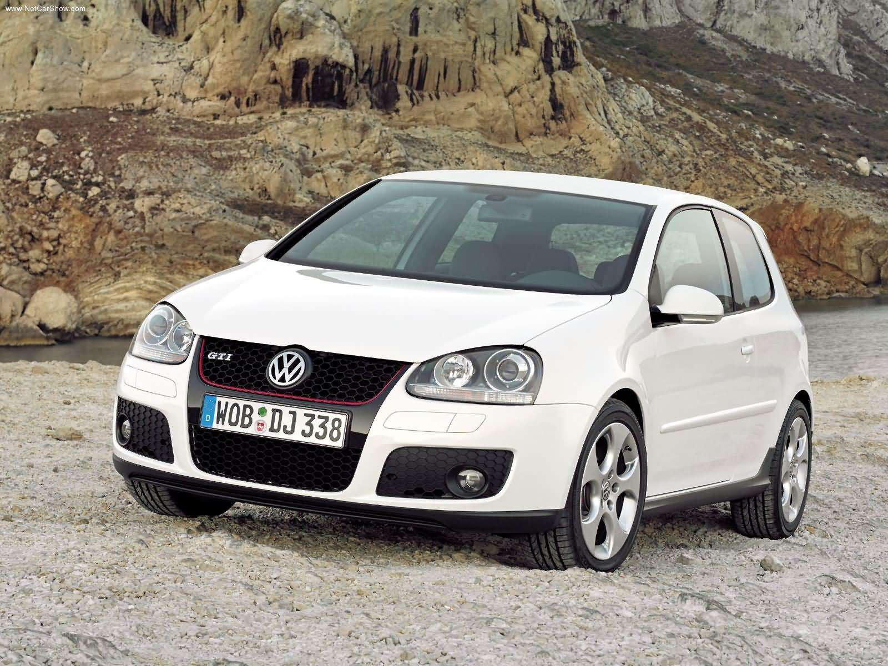

Golf 5 gti
Aujourd'hui encore, les initiales GTI pèsent beaucoup dans l'image de Volkswagen qui vient de fêter les 40 ans de la Golf éponyme.
Mais après avoir connu des hauts et des bas (et débats aussi), la success story aurait pu s'achever à la 5ème génération sans une véritable volonté de reconquête...
Golf GTI atteignait les 182 km/h avec un petit 1.6L de 110 ch. Des performances qui démodaient d'un seul
coup tous les petits coupés sportifs du marché et allaient lancer un véritable phénomène de mode durant une décennie...
Comme l’originale, qui faisait figure de pionnière, la Golf V GTI est proposée en trois et cinq portes. Elle se caractérise
par un look sportif qui ne trompe pas, aussi bien à l’intérieur qu’à l’extérieur, tout en restant d'une sobriété exemplaire.
Murat Günak, responsable du design chez Volkswagen à l'époque.
